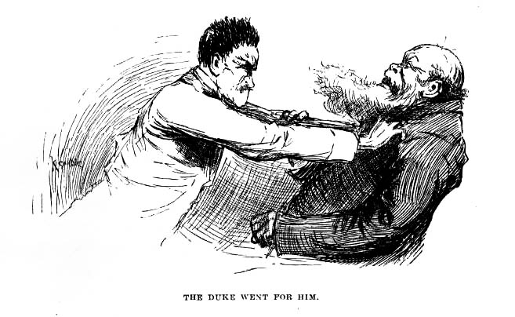

they got aboard the king went for me, and shook me by the collar, and says:
“Tryin’ to give us the slip, was ye, you pup! Tired of our company, hey?”
I says:
“No, your majesty, we warn’t—please don’t, your majesty!”
“Quick, then, and tell us what was your idea, or I’ll shake the insides out o’ you!”
“Honest, I’ll tell you everything just as it happened, your majesty. The man that had a-holt of me was very good to me, and kept saying he had a boy about as big as me that died last year, and he was sorry to see a boy in such a dangerous fix; and when they was all took by surprise by finding the gold, and made a rush for the coffin, he lets go of me and whispers, ‘Heel it now, or they’ll hang ye, sure!’ and I lit out. It didn’t seem no good for me to stay—I couldn’t do nothing, and I didn’t want to be hung if I could get away. So I never stopped running till I found the canoe; and when I got here I told Jim to hurry, or they’d catch me and hang me yet, and said I was afeard you and the duke wasn’t alive now, and I was awful sorry, and so was Jim, and was awful glad when we see you coming; you may ask Jim if I didn’t.”
Jim said it was so; and the king told him to shut up, and said, “Oh, yes, it’s mighty likely!” and shook me up again, and said he reckoned he’d drownd me. But the duke says:
“Leggo the boy, you old idiot! Would you a done any different? Did you inquire around for him when you got loose? I don’t remember it.”
So the king let go of me, and begun to cuss that town and everybody in it. But the duke says:
“You better a blame’ sight give yourself a good cussing, for you’re the one that’s entitled to it most. You hain’t done a thing from the start that had any sense in it, except coming out so cool and cheeky with that imaginary blue-arrow mark. That was bright—it was right down bully; and it was the thing that saved us. For if it hadn’t been for that they’d a jailed us till them Englishmen’s baggage come—and then—the penitentiary, you bet! But that trick took ’em to the graveyard, and the gold done us a still bigger kindness; for if the excited fools hadn’t let go all holts and made that rush to get a look we’d a slept in our cravats to-night—cravats warranted to wear, too—longer than we’d need ’em.”
They was still a minute—thinking; then the king says, kind of absent-minded like:
“Mf! And we reckoned the niggers stole it!”
That made me squirm!
“Yes,” says the duke, kinder slow and deliberate and sarcastic, “we did.”
After about a half a minute the king drawls out:
“Leastways, I did.”
The duke says, the same way:
“On the contrary, I did.”
The king kind of ruffles up, and says:
“Looky here, Bilgewater, what’r you referrin’ to?”
The duke says, pretty brisk:
“When it comes to that, maybe you’ll let me ask, what was you referring to?”
“Shucks!” says the king, very sarcastic; “but I don’t know—maybe you was asleep, and didn’t know what you was about.”
The duke bristles up now, and says:
“Oh, let up on this cussed nonsense; do you take me for a blame’ fool? Don’t you reckon I know who hid that money in that coffin?”
“Yes, sir! I know you do know, because you done it yourself!”
“It’s a lie!”—and the duke went for him. The king sings out:
“Take y’r hands off!—leggo my throat!—I take it all back!”
The duke says:
“Well, you just own up, first, that you did hide that money there, intending to give me the slip one of these days, and come back and dig it up, and have it all to yourself.”
“Wait jest a minute, duke—answer me this one question, honest and fair; if you didn’t put the money there, say it, and I’ll b’lieve you, and take back everything I said.”
“You old scoundrel, I didn’t, and you know I didn’t. There, now!”
“Well, then, I b’lieve you. But answer me only jest this one more—now don’t git mad; didn’t you have it in your mind to hook the money and hide it?”
The duke never said nothing for a little bit; then he says:
“Well, I don’t care if I did, I didn’t do it, anyway. But you not only had it in mind to do it, but you done it.”
“I wisht I never die if I done it, duke, and that’s honest. I won’t say I warn’t goin’ to do it, because I was; but you—I mean somebody—got in ahead o’ me.”
“It’s a lie! You done it, and you got to say you done it, or—”
The king began to gurgle, and then he gasps out:
“’Nough!—I own up!”
I was very glad to hear him say that; it made me feel much more easier than what I was feeling before. So the duke took his hands off and says:
“If you ever deny it again I’ll drown you. It’s well for you to set there and blubber like a baby—it’s fitten for you, after the way you’ve acted. I never see such an old ostrich for wanting to gobble everything—and I a-trusting you all the time, like you was my own father. You ought to been ashamed of yourself to stand by and hear it saddled on to a lot of poor niggers, and you never say a word for ’em. It makes me feel ridiculous to think I was soft enough to believe that rubbage. Cuss you, I can see now why you was so anxious to make up the deffisit—you wanted to get what money I’d got out of the Nonesuch and one thing or another, and scoop it all!”
The king says, timid, and still a-snuffling:
“Why, duke, it was you that said make up the deffisit; it warn’t me.”
“Dry up! I don’t want to hear no more out of you!” says the duke. "And now you see what you GOT by it. They’ve got all their own money back, and all of ourn but a shekel or two besides. G’long to bed, and don’t you deffersit me no more deffersits, long ’s you live!”
So the king sneaked into the wigwam and took to his bottle for comfort, and before long the duke tackled HIS bottle; and so in about a half an hour they was as thick as thieves again, and the tighter they got the lovinger they got, and went off a-snoring in each other’s arms. They both got powerful mellow, but I noticed the king didn’t get mellow enough to forget to remember to not deny about hiding the money-bag again. That made me feel easy and satisfied. Of course when they got to snoring we had a long gabble, and I told Jim everything.